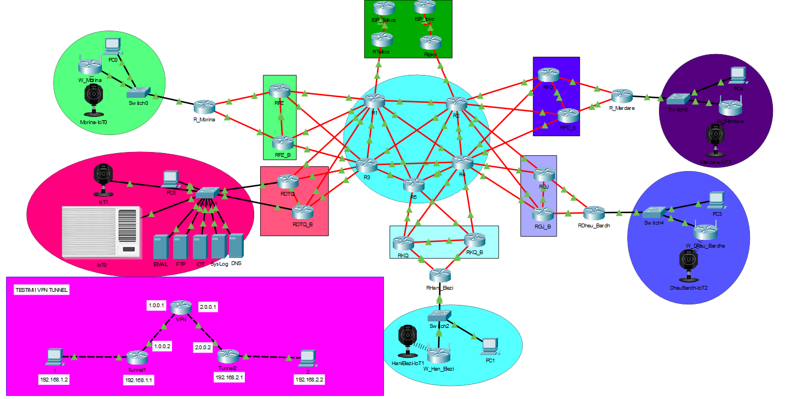

Project 1 - Movie Website

This project is about a movie website that was built with HTML, CSS, JavaScript, JavaScript, and a MySQL database.
The website, named FilmaTix, offers a wide range of movie-related features, including detailed movie information and trailers.
It's a seamless fusion of web development technologies, making it an ideal platform for movie enthusiasts to explore their favorite films.
JavaScript and MySQL play a pivotal role in ensuring efficient data management and a smooth user experience.
Project 2 - A File Editor with Python

This project involves the development of a timetable tool with a graphical user interface (GUI).
The tool, referred to as "File Menager", is designed to efficiently manage semester programs for university students.
It leverages Python, CSV file handling, and the Tkinter library to create an intuitive user experience.
Project 3 - Kosovo Customs Network
This project is centered around the development of a network simulation using Cisco Packet Tracer,
focusing on the operations of the Kosovo Customs Department. The simulation offers a virtual
environment to model and optimize network configurations and operations specific to customs-related tasks in Kosovo.